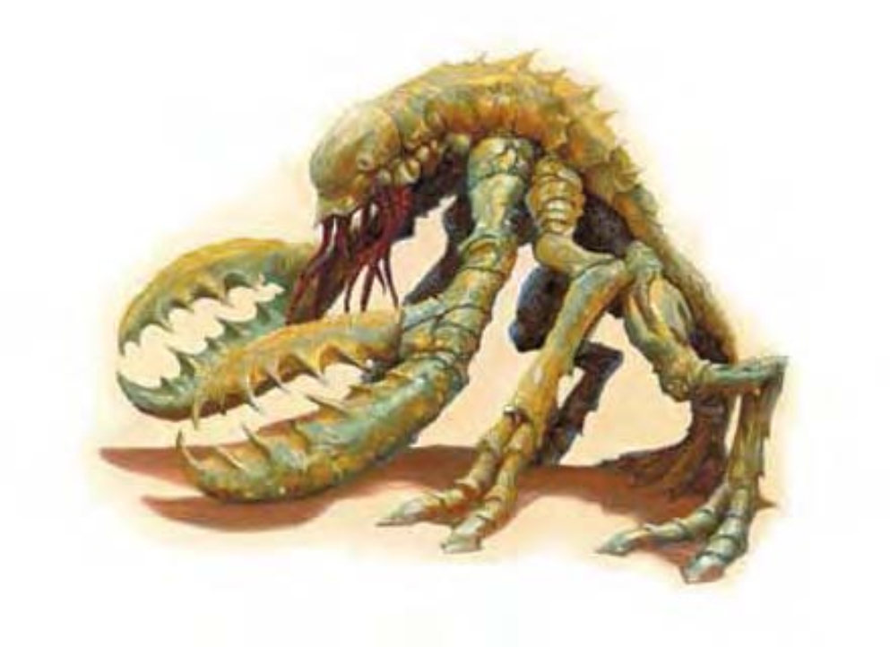

| 生命骰： | 11d8+44（93hp） |
| 先攻： | +7 |
| 速度： | 30英尺（6格），游泳20英尺 |
| 防御等级： | 22（-1体型，+3敏捷，+10天生），接触12，措手不及19 |
| 基本攻击/擒抱： | +8/+17 |
| 攻击： | 爪抓+12近战（2d6+5） |
| 全回合攻击： | 2爪抓+12近战（2d6+5） |
| 占据/触及： | 10英尺/5英尺 |
| 特殊攻击： | 紧勒3d6+5，精通攫抓，麻痹触须 |
| 特殊能力： | 两栖，黑暗视觉60英尺，免疫毒素 |
| 豁免： | 强韧+7，反射+6，意志+9 |
| 属性： | 力量20，敏捷16，体质18，智力10，感知14，魅力5 |
| 技能： | 躲藏+13，聆听+11，侦察+11，游泳+13 |
| 专长： | 警觉，盲斗，战斗反射，精通先攻 |
| 区域： | 温带沼泽 |
| 组织： | 单独，成对，或成群（3-5） |
| 挑战等级： | 7 |
| 宝物： | 1/10钱币；50%商品；标准物品 |
| 阵营： | 通常混乱邪恶 |
| 进化： | 12-16HD（大型）；17-33HD（超大型） |
| 等级调整： | - |
仿佛某种大型昆虫或是甲壳类生物，当它从平静的水池中浮出水面，当火把照过它斑驳的、装甲一般的甲壳反射出光线时，它钳状的尖爪带着愤怒不断开合，咔嗒作响。当它浮出水面时，小而漆黑的眼睛饱含饥饿的凝视牢牢地锁定在你身上，从嘴部垂下的触须则在兴奋之中蠕动。
甲伏怪是混合有甲壳纲动物、昆虫与蟒蛇特征的恐怖生物，这种令人讨厌的家伙经常潜伏在水底或是水面附近，等待智慧生物自投罗网。
尽管属于两栖生物，甲伏怪的并不善于游泳，因此偏好从陆地上或是很浅的水里发动攻击。它们乐衷于捕食蜥蜴人。
甲伏怪有从死亡敌人身上搜集战利品的习惯。它们无法使用武器、防具或其他物品，但其巢穴里却存了一堆。若敌人身上没什么甲伏怪感兴趣的东西，它们就会取走他们的头骨。
甲伏怪大多住在沼泽、丛林里，但某些甲伏怪适应了地下生活，在地底溪流或湖附近觅食。这类地底种群通常以捕食战蜥人和缺乏的卓尔为生。眼魔或夺心魔偶尔将甲伏怪养作奴仆。
甲伏怪大约有8英尺长，体重可达650磅。
甲伏怪说通用语（地底种群则说地底通用语）。
战斗甲伏怪喜欢待在岸边，潜伏在阴暗的水里，当它听到附近有猎物经过时（进入或离开水里）再用突袭来攻击对方。甲伏怪会用爪子擒抱并且紧勒一名敌人，再将其送到麻痹触须可触及的位置。甲伏怪会尽量让一只爪子空着，因此当它面对一大群敌人时，会先把麻痹或死掉的受害者丢在一边，继续用爪子擒抱、紧勒并麻痹其它对手。
紧勒Constrict（Ex）：一旦通过擒抱检定，甲伏怪将造成3d6+5点伤害。
精通攫抓Improved Grab（Ex）：如需使用这一能力，甲伏怪必须用卷须攻击成功命中敌人。随后，它可以尝试以一个自由动作发动擒抱，这一动作不会引发借机攻击。如果它从擒抱检定中胜出，它将就此建立控制并可以发动紧勒或在其下一轮中将受攫抓的敌人递送到其触须之前。
麻痹触须Paralytic Tentacles（Ex）：甲伏怪可用一个移动动作将被爪子擒抱住的受害者送至它的触须处。这些触须的擒抱力量与爪子相同，但不造成伤害，而是分泌出一种麻痹性物质。被定身在触须上的的对手在每个甲伏怪行动轮都必须通过一次DC19的强韧检定否则会麻痹6轮。该豁免DC基于体质。在被定身其间，无论麻痹与否，受害者每轮会自动受到该生物的颚部所造成的1d8+2点伤害。
两栖Amphibious（Ex）：尽管甲伏怪是水生，它们可以在陆地上长期生存。
技能：甲伏怪在游泳检定上有+8种族加值并总是可以取10，即使是在匆忙或是被威胁的情况下。在沿直线游泳时，甲伏怪可以使用奔跑动作。